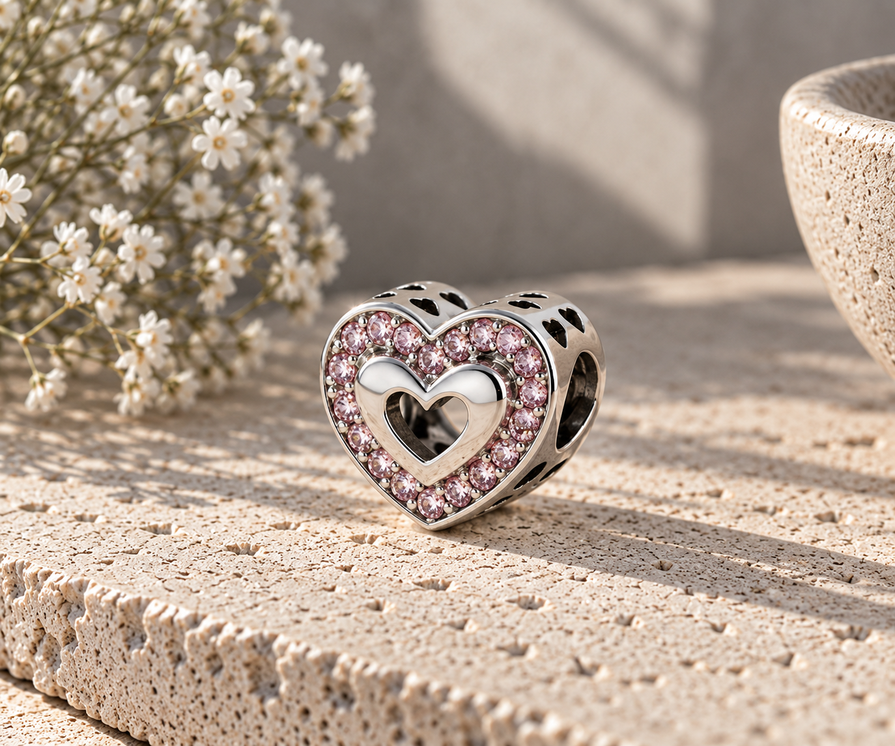
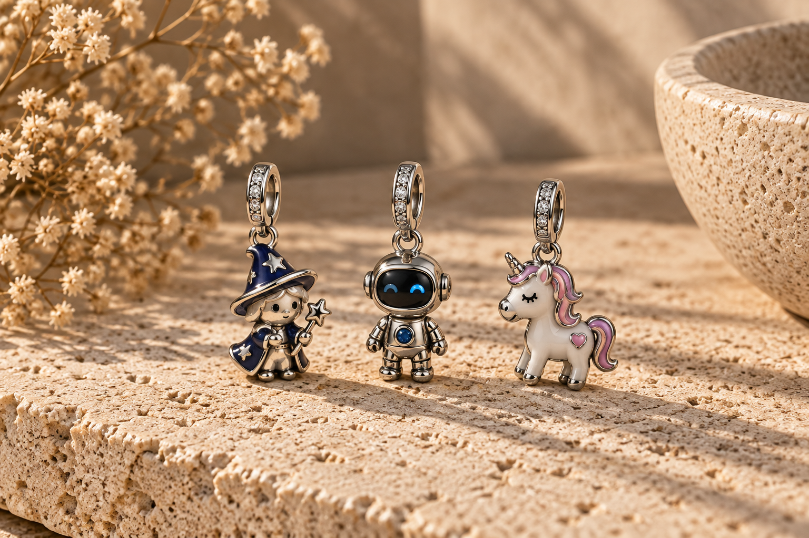
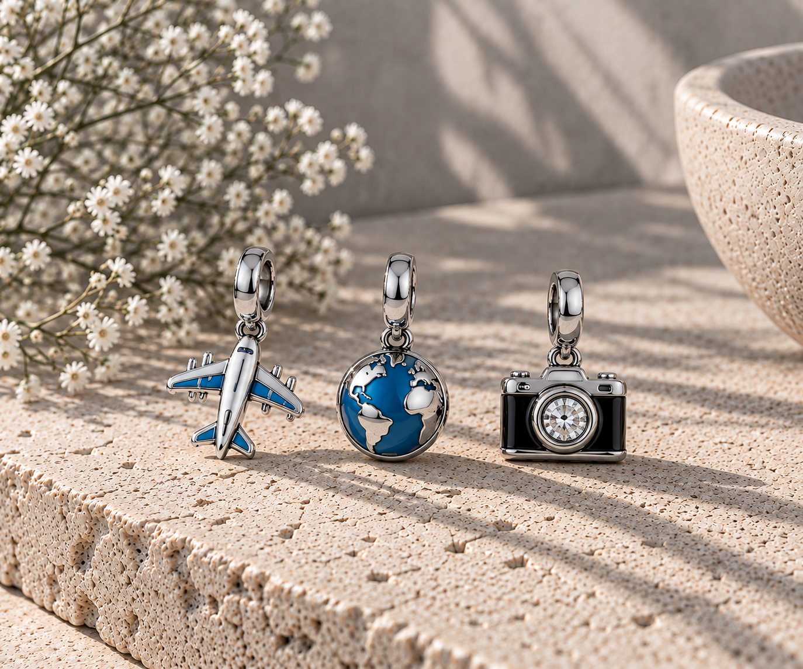
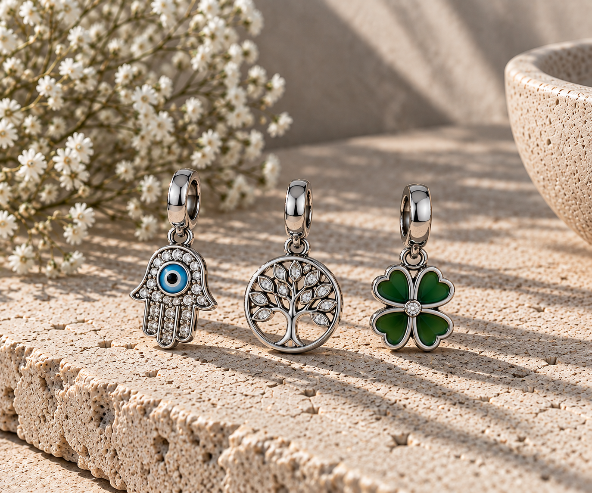
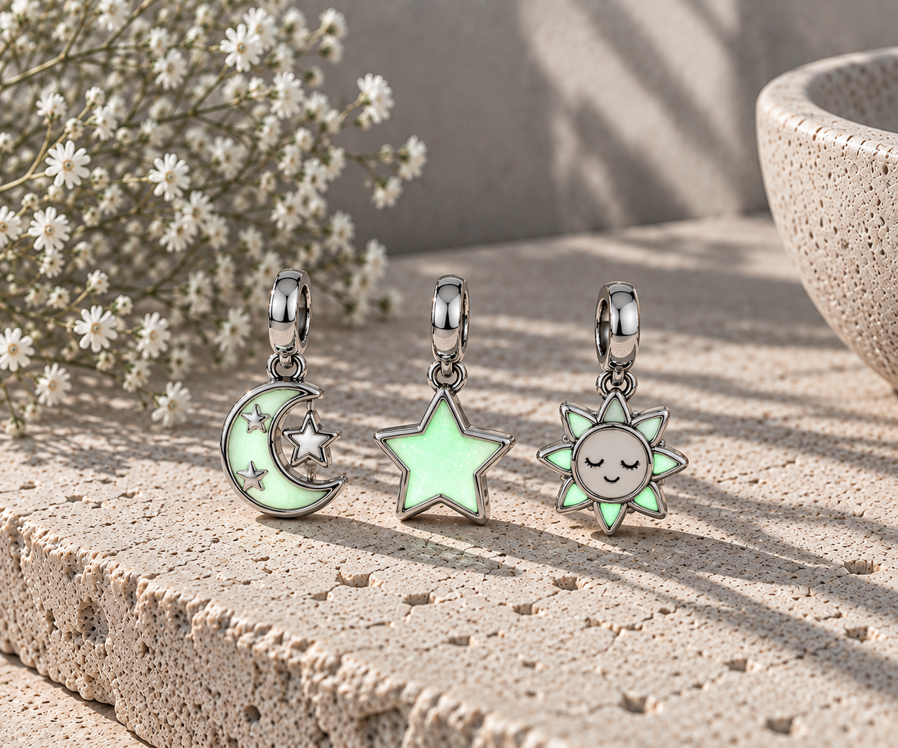

¿Qué charm puedo poner en una pulsera?
Puedes elegir un diseño que encaje con tu estilo, tus gustos o aquello que quieras representar. Letras, números, meses, animales, símbolos, personajes y otros diseños son algunas de las opciones disponibles.
Pequeños detalles, grandes historias.
Descubre charms de plata de ley 925 para personalizar tu pulsera con diseños que representan personas, fechas, aficiones, mascotas, símbolos y momentos especiales. Crea una combinación que tenga significado para ti o encuentra un charm original para regalar.
En Charms Selector reunimos diferentes categorías de charms para ayudarte a encontrar el diseño que buscas, desde letras, números y meses hasta horóscopo, animales, amor, amuletos, personajes, ocasiones y hobbies y diseños fluorescentes y térmicos.

Personaliza tu pulsera con una letra o inicial que represente un nombre, una persona especial o un recuerdo.
Ver colección →
Encuentra números para representar fechas, edades, aniversarios o cualquier cifra que tenga un significado especial.
Ver colección →
Descubre charms de los meses del año para representar cumpleaños, fechas especiales y momentos importantes.
Ver colección →
Descubre diseños inspirados en los signos del zodiaco y encuentra el que mejor representa tu personalidad.
Ver colección →
Perros, gatos y otros animales para representar una mascota, una afición o un diseño que tenga un significado especial.
Ver colección →
Descubre charms de amor para representar sentimientos, relaciones y momentos especiales.
Ver colección →
Descubre charms inspirados en personajes, criaturas y diseños de fantasía para personalizar tu pulsera y darle un toque único.
Ver colección →
Descubre charms para celebraciones, viajes, aficiones y momentos especiales para personalizar tu pulsera.
Ver colección →
Descubre charms inspirados en amuletos, símbolos de suerte, protección y otros significados especiales para personalizar tu pulsera.
Ver colección →
Descubre charms fluorescentes y diseños que brillan en la oscuridad para crear una pulsera original, diferente y llamativa.
Ver colección →Existen muchos tipos de charms para pulseras y cada diseño puede tener un significado diferente. Una inicial puede representar a una persona importante, un número puede recordar una fecha y un mes puede estar relacionado con un cumpleaños o un momento especial.
También puedes encontrar charms inspirados en animales, signos del zodiaco, símbolos, personajes, aficiones, viajes y muchas otras temáticas. La elección depende de tus gustos, de tu estilo y de aquello que quieras representar en tu pulsera.
Algunas personas prefieren combinar varios charms para crear una pulsera personalizada que reúna diferentes recuerdos, mientras que otras buscan una pieza concreta con un significado especial.
Elegir un charm puede ser más sencillo si primero piensas en qué quieres representar. Si buscas algo personal, una letra, un número o un mes pueden ser buenas opciones. Si quieres representar una afición, una mascota o un rasgo de personalidad, puedes buscar un diseño relacionado con animales, horóscopo, música, viajes o deportes.
Si el charm es para otra persona, puedes elegirlo teniendo en cuenta sus gustos, vuestra relación o algún recuerdo compartido. Una inicial, una fecha, un símbolo o un diseño relacionado con una afición pueden convertir una pieza pequeña en un detalle mucho más personal.
Los charms también pueden ser una opción para diferentes ocasiones, como cumpleaños, aniversarios, Navidad, santos, bodas, bautizos y comuniones. Lo importante es encontrar un diseño que tenga sentido para la persona que lo recibe y para el momento que quieres recordar.
El material también puede ser un criterio importante. Todos nuestros charms son de plata de ley 925. Si quieres conocer mejor este material, puedes consultar nuestra guía sobre la plata 925 para descubrir sus características y cuidados.
Un charm puede tener un significado diferente según la persona que lo recibe o el momento en el que se regala. Una inicial, una fecha, un animal o un símbolo pueden convertirse en un pequeño recuerdo de alguien especial.
Para una pareja puedes elegir un charm relacionado con una fecha importante, una inicial, un símbolo de amor o un recuerdo compartido. Es una forma sencilla de llevar contigo algo que represente vuestra historia.
Una inicial, un corazón, un animal o cualquier diseño relacionado con la familia puede convertirse en un detalle especial para mamá. También puedes elegir un charm que represente un recuerdo compartido.
Los charms también pueden representar una amistad. Puedes buscar un diseño relacionado con una afición, un animal, una inicial o algún momento que hayas compartido con un amigo o una amiga.
Las letras, los números, los meses y otros símbolos pueden utilizarse para representar a padres, hermanos, abuelos, primas y otros familiares, creando una pulsera llena de pequeños recuerdos.
Una inicial, un símbolo, un animal o un diseño relacionado con sus gustos puede ser un detalle especial para una hermana y convertirse en un pequeño recuerdo de vuestra relación.
Un cumpleaños puede ser una buena ocasión para regalar un charm relacionado con la edad, una inicial, un mes de nacimiento o algún diseño que represente los gustos de la persona.
Para un aniversario puedes elegir un número, una fecha, una inicial o un símbolo que recuerde un momento importante de la relación.
En Navidad puedes elegir un charm como pequeño detalle para alguien especial. Un diseño relacionado con sus gustos, una afición o un recuerdo puede hacerlo más personal.
Un charm también puede ser un detalle para celebrar un santo. Una inicial, un nombre, un símbolo o un diseño relacionado con la persona pueden ser opciones interesantes.
Para una boda puedes buscar un charm que represente el amor, una fecha especial, una inicial o un recuerdo relacionado con la pareja y la celebración.
Un charm puede convertirse en un pequeño recuerdo de un bautizo. Los diseños relacionados con nombres, iniciales, fechas o símbolos especiales pueden ser una opción para conservar ese momento.
Para una comunión puedes elegir un charm que represente a la persona, una fecha importante o algún símbolo que tenga un significado especial para ella.
Todos nuestros charms son de plata de ley 925, un material muy utilizado en joyería y adecuado para crear combinaciones personalizadas según tus gustos.
Los diseños están pensados para utilizarse en pulseras y también pueden formar parte de un collar, dependiendo del tipo de pieza y de la cadena utilizada.
Son compatibles con marcas principales, pulseras de dijes estándar y pulseras de abalorios de 3 mm. Antes de comprar, comprueba siempre las características y medidas indicadas para cada producto.
Puedes encontrar diferentes diseños según tus gustos o aquello que quieras representar. Si buscas una inicial o una letra especial, puedes visitar nuestros charms de letras e iniciales. Para fechas, edades o números con significado, consulta los charms de números.
Si quieres elegir un mes de nacimiento, puedes descubrir nuestros charms de meses y piedras de nacimiento. También puedes encontrar charms de horóscopo y signos del zodiaco y diseños inspirados en animales en nuestra sección de charms de animales.
Para diseños relacionados con sentimientos puedes visitar los charms de amor. También encontrarás charms de amuletos y símbolos, charms de personajes, charms de ocasiones y hobbies y charms fluorescentes.
Si quieres conocer mejor el material de nuestros productos, puedes consultar nuestra información sobre plata de ley 925.
Puedes elegir un diseño que encaje con tu estilo, tus gustos o aquello que quieras representar. Letras, números, meses, animales, símbolos, personajes y otros diseños son algunas de las opciones disponibles.
El significado depende del diseño y de la persona que lo lleva. Un charm puede representar a una persona, una fecha, una afición, una mascota, un recuerdo o simplemente formar parte de la decoración de una pulsera.
Pueden ser un detalle muy personal cuando eliges un diseño relacionado con los gustos, recuerdos o momentos importantes de la persona que lo recibe.
Depende del tipo de pulsera y del sistema de cierre o enganche. Nuestros charms están pensados para utilizarse en pulseras de dijes estándar y pulseras de abalorios de 3 mm, pero conviene comprobar las características de cada producto antes de comprarlo.
Sí. Todos nuestros charms son de plata de ley 925. Puedes consultar nuestra información sobre este material para conocer sus características, cómo reconocerlo y cómo cuidarlo correctamente.
Sí, los charms también pueden utilizarse en collares cuando el diseño, el tamaño y el sistema de enganche son adecuados para la cadena. Comprueba las características de cada pieza antes de utilizarla.
Un charm puede ser un detalle para cumpleaños, aniversarios, Navidad, santos, bodas, bautizos, comuniones y otras ocasiones especiales. También puede regalarse simplemente para conservar un recuerdo.
Sí. Los precios, la disponibilidad y las variantes de los productos pueden cambiar. Antes de realizar una compra, comprueba siempre la información actualizada en Amazon.
Explora nuestras categorías y descubre un diseño que encaje contigo, con tu pulsera o con la persona a la que quieres hacer un detalle especial. Desde letras e iniciales hasta animales, horóscopo, amor, números, meses, amuletos y mucho más, encuentra el charm que quieras llevar contigo.